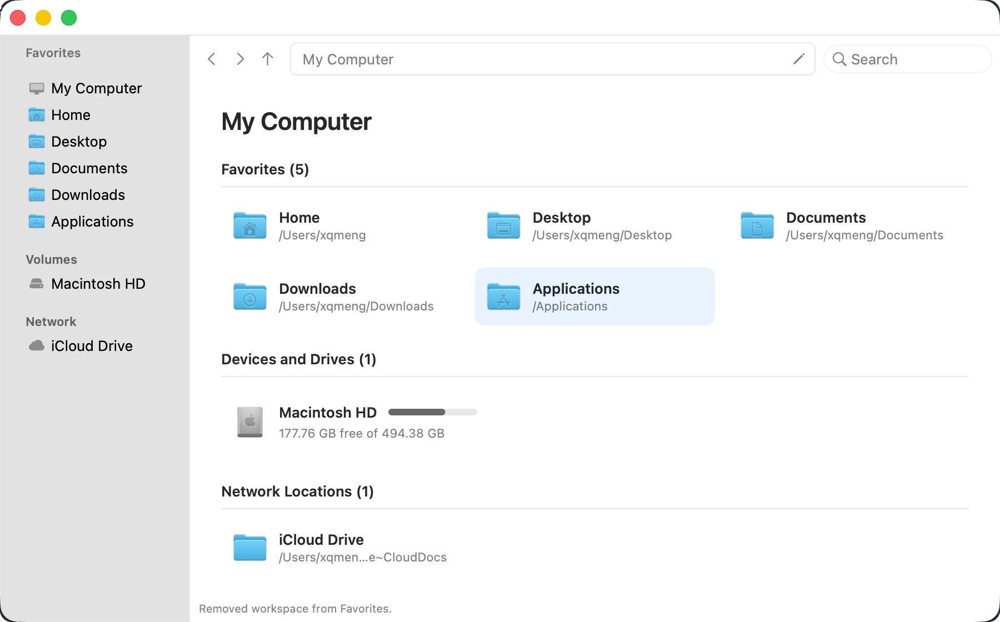
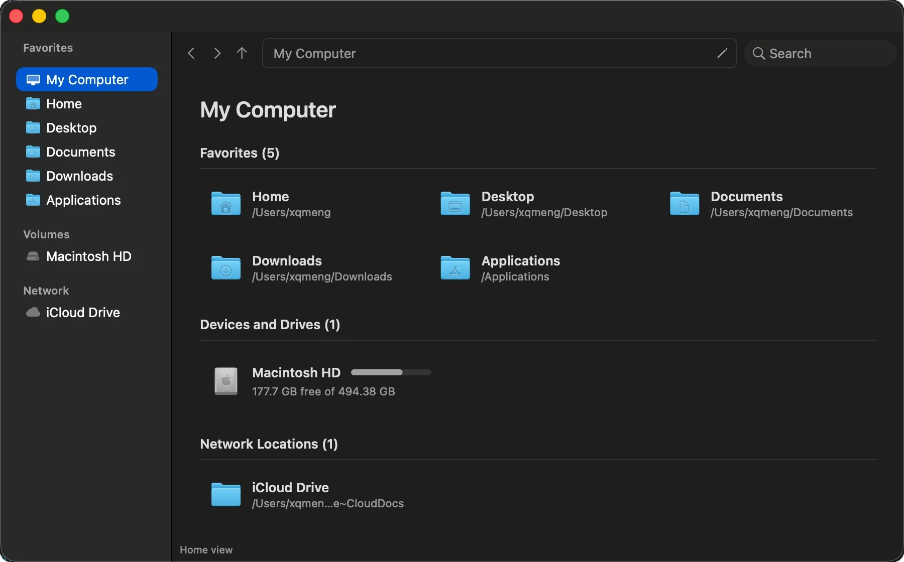

Windows and tabs多窗口与标签页
Open multiple windows and native window tabs. Each tab keeps its own path, history, and selection.
支持多窗口和 AppKit 原生窗口标签。每个标签页都有独立的路径、历史记录和选择状态。
Preview 0.7.0 · Apple Silicon 预览版 0.7.0 · Apple Silicon
Explorer.app is a native AppKit file manager with tabs, a location sidebar, a path bar, and a details list. It keeps macOS behavior you already know: Quick Look, Trash, Command shortcuts, and coordinated file operations. Explorer.app 是一款原生 AppKit 文件管理器，提供标签页、位置侧边栏、路径栏和详细信息列表。它同时保留 macOS 的使用习惯：Quick Look、废纸篓、Command 快捷键，以及经过协调的文件操作。
Requires macOS 14 or later. Current builds are unsigned preview releases. 需要 macOS 14 或更高版本。当前构建为未签名的预览版。


The product goal is Explorer-style efficiency, not a Windows skin: location shortcuts, an address bar, a details list, tabs, keyboard control, an operation queue, and conflict handling. 产品目标是复用资源管理器的高效率工作方式，而不是套一层 Windows 外观：位置快捷方式、地址栏、详细信息列表、标签页、键盘操作、文件操作队列和冲突处理。
Open multiple windows and native window tabs. Each tab keeps its own path, history, and selection.
支持多窗口和 AppKit 原生窗口标签。每个标签页都有独立的路径、历史记录和选择状态。
Switch between a sortable details list and an icon view. Hidden files, column sorting, and a preview pane are one shortcut away.
可在可排序的详细信息列表和图标视图之间切换。隐藏文件、列排序和预览窗格都有对应快捷键。
The sidebar lists Favorites, mounted volumes, and Network locations such as iCloud Drive. Jump with one click, or type a path with Command-L.
侧边栏列出收藏夹、已挂载卷和 iCloud Drive 等网络位置。单击即可跳转，也可以用 Command-L 输入路径。
Search the current folder tree with Spotlight, press Space for Quick Look, and keep an optional preview pane open while you browse.
用 Spotlight 搜索当前文件夹树，按空格即可 Quick Look，也可以在浏览时打开可选的右侧预览窗格。
Copy, cut, paste, rename, duplicate, Trash, and Shift-Delete run through a queued engine. Conflicts can replace, keep both, skip, stop, or apply to all.
复制、剪切、粘贴、重命名、重复、移入废纸篓和 Shift-Delete 都走操作队列。冲突时可替换、保留两者、跳过、停止或应用到全部。
Mutations use NSFileCoordinator. Replacements keep a write-ahead journal so an interrupted overwrite can restore or finish on the next launch. Undo and redo cover completed operations.
文件变更使用 NSFileCoordinator。替换操作会写前日志，中断后可在下次启动时恢复或完成清理。已完成的操作支持撤销和重做。
The prebuilt zip and Homebrew cask are Apple Silicon only. Intel Macs can build from source. Preview builds are ad-hoc signed and not notarized, so Gatekeeper quarantines the download. 预编译 zip 和 Homebrew Cask 仅支持 Apple Silicon。Intel Mac 需要从源码构建。预览版使用 ad-hoc 签名且未经公证，因此 Gatekeeper 会隔离下载的应用。
brew tap xq-meng/tap brew install --cask explorer-app xattr -dr com.apple.quarantine /Applications/Explorer.app
Get Explorer-<version>-arm64.zip from GitHub Releases, move Explorer.app into /Applications, then remove quarantine with the same xattr command.
从 GitHub Releases 下载 Explorer-<version>-arm64.zip，将 Explorer.app 拖入 /Applications，再用同样的 xattr 命令移除隔离属性。
If macOS still says the app is damaged, run xattr again, then open Explorer from Finder with Right-click → Open. Update with brew upgrade --cask explorer-app.
如果 macOS 仍提示应用已损坏，请再运行一次 xattr，然后在 Finder 中右键点按 Explorer 并选择打开。更新使用 brew upgrade --cask explorer-app。
macOS Command shortcuts stay in place, with a few Explorer-style keys for path editing and deletion. 保留 macOS 的 Command 快捷键，并补充路径编辑和删除等资源管理器风格按键。
| Shortcut快捷键 | Action操作 |
|---|---|
| Command-L | Edit the current path编辑当前路径 |
| Command-T / Command-W | New tab / close tab新建标签页 / 关闭标签页 |
| Command-1 / Command-2 | Details view / icon view详细信息视图 / 图标视图 |
| Command-Shift-P | Toggle the preview pane显示或隐藏预览窗格 |
| Space | Quick Look |
| Delete / Shift-Delete | Move to Trash / delete immediately移入废纸篓 / 立即删除 |
Do not test destructive operations on the only copy of a file. Review known issues before using a preview build with important data. 不要在文件的唯一副本上测试破坏性操作。在用预览版处理重要数据之前，请先阅读已知问题。